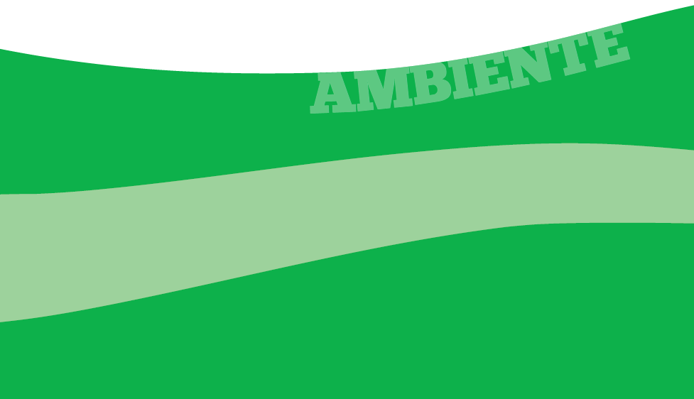
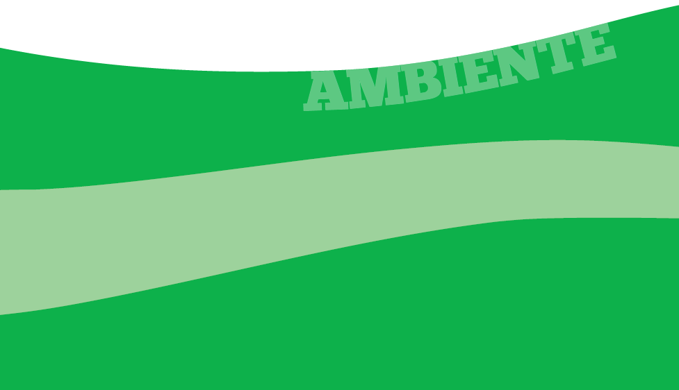

Risorsa
L'emergenza rifiuti, provocata dallo sviluppo dell'economia dei consumi e della cultura dell'“usa e getta” è generata da un modello lineare di crescita che prevede la produzione di un bene, il suo utilizzo e l'abbandono. Con l'avvento dell'economia dei consumi si sono anche affermate strategie di “obsolescenza programmata”, volte a limitare il ciclo di vita di alcuni oggetti. L'obsolescenza può essere “percepita” (indotta da strategie di marketing e pubblicitarie, che ci spingono ad acquistare nuovi prodotti “di tendenza” o più tecnologici) o reale. Qualche esempio? Le lampadine avevano un tempo una durata media di 2500 ore, nel 1924 le aziende produttrici stipularono un accordo per limitarne la durata a 1000 ore;
negli anni '30 si decise di rendere meno resistenti le calze di nylon; oggi, molti beni di consumo (elettrodomestici, dispositivi elettronici, capi di abbigliamento) sono progettati in modo da rompersi o usurarsi dopo un certo periodo di tempo... Questo modello presuppone, in modo errato, una quantità di risorse infinita, economica e a basso costo di smaltimento.
È necessario quindi cambiare rotta e passare da un'economia lineare – insostenibile – a una economia circolare, basata su una nuova etica produttiva e su nuovi stili di vita che prevedano l'applicazione di pratiche di riuso, riciclaggio, recupero di materia e di energia.
In questo modo i rifiuti si trasformeranno in risorse.


 
